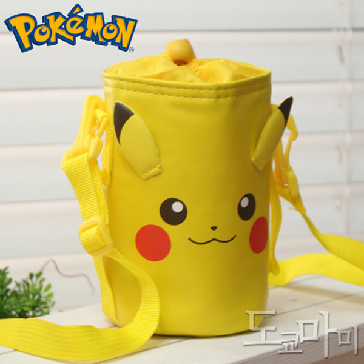
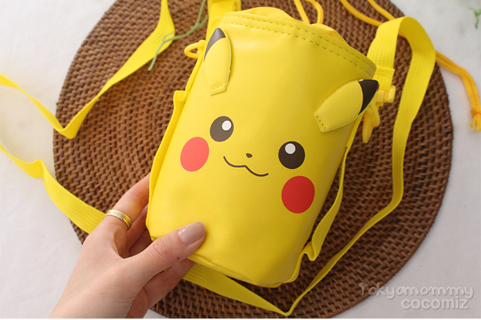
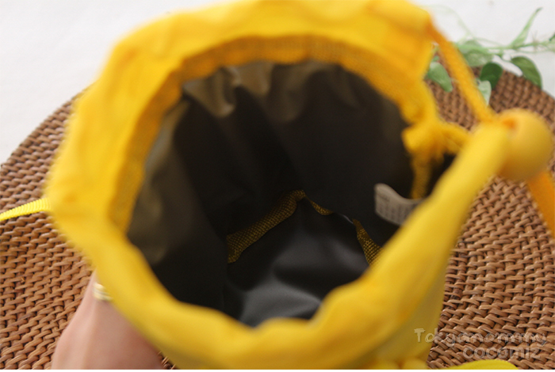
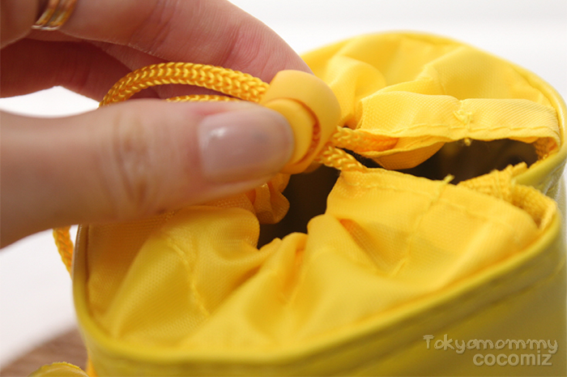
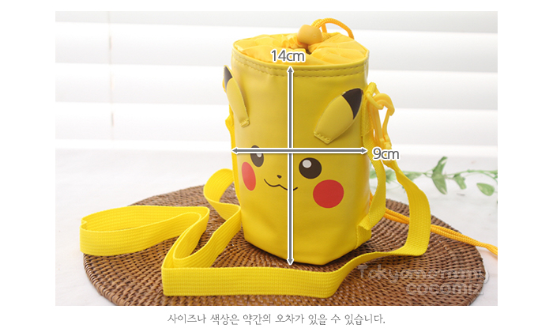
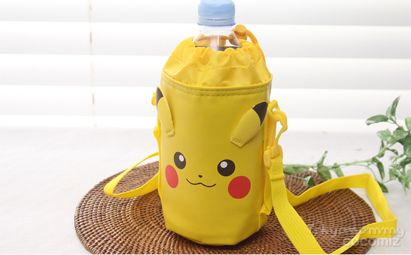
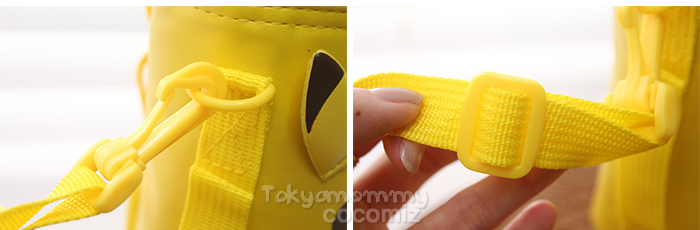

얼음 텀블러 결로 걱정 끝,
가방 속 소지품을 보송하게 지켜주는 피카츄 보냉 파우치
내부 단열 발포 안감이 차가운 냉기를 잡아주고 겉감으로 물방울이 배어나오지 않게 지켜줍니다.
가방 안에서는 책과 서류를 지켜주는 슬림 보틀 가드로, 외출할 땐 탈부착 어깨끈으로 가볍게 메고 나가세요.

출근길·등굣길, 가방을 열었을 때 이런 적 없으셨나요?
시원한 음료는 좋은데, 가방 속 소지품이 젖는 스트레스는 이제 그만 겪으세요.
소중한 서적과 다이어리가 축축하게 젖을 때
얼음 텀블러 겉면에 맺힌 결로 물방울 때문에 전공책 모서리가 쭈글쭈글해지고 아끼는 다이어리가 번져 속상했던 경험.
깊은 백팩 속에서 텀블러가 뒹굴고 쓰러질 때
손잡이가 없는 텀블러가 가방 안에서 옆으로 넘어져, 꺼내려면 가방 바닥을 한참 뒤적거려야 했던 번거로움.
손이 시렵고 책상 바닥에 물 웅덩이가 고일 때
녹아내리는 얼음물로 손이 축축하고 차가우며, 사무실 책상이나 카페 테이블에 흥건한 물기가 고여 휴지로 계속 닦아낼 때.

손에 직접 닿는 축축함과 가방 속 결로 누출, 피카츄 파우치로 깔끔히 해결하세요.
내부 발포 안감으로 물방울 차단, 당신의 가방 속이 항상 보송해집니다
단열 발포폴리에틸렌 안감과 원터치 조리개 구조가 만드는 놀라운 보송함을 확인하세요.
차가운 결로 물방울로 축축한 가방
얼음 텀블러 표면에 맺힌 이슬이 겉으로 흘러나와 주변 서류와 전자기기 파우치를 적시고 가방 속에서 달그락거리며 쓰러짐
하루 종일 뽀송하고 안전한 가방 속
내부 단열 발포 안감이 냉기를 가두고 물기를 완충하여 겉감으로 배어 나오지 않으며, 조리개로 흔들림 없이 밀착 고정

단열 발포폴리에틸렌 안감
도톰한 단열 발포재질 내장재가 외부 공기와의 온도차를 줄여 열과 냉기 손실을 막아주며, 표면 결로 이슬이 소지품으로 전달되는 것을 방지합니다.

원터치 스트링 조리개
물병을 넣고 조리개 스토퍼를 가볍게 당겨주면 입구가 쏙 오므라들어 보틀이 밖으로 튀어나오지 않고 가방 속에서 흔들려도 안정적으로 감싸줍니다.
500ml에 딱 맞춘 슬림 규격, 이렇게 사용하세요
가로 9cm, 세로 14cm 콤팩트 규격으로 가방 안 수납과 야외 크로스백 착용을 자유롭게 넘나듭니다.
보틀 쏙 수납
시원한 얼음 텀블러나 500ml 규격 생수병을 파우치에 쏙 넣어줍니다.
조리개 스토퍼 고정
상단 노란색 스트링 스토퍼를 당겨 입구를 단단히 조여 밀착시킵니다.
가방 안 쏙 or 크로스 착용 (2-Way)
가방에 넣을 땐 어깨끈을 떼고 슬림하게 넣고, 외출할 땐 어깨끈을 연결해 가볍게 크로스로 멥니다.

| 호환 규격 | 500ml 생수병 및 슬림 보틀/텀블러 |
|---|---|
| 실측 치수 | 가로 9cm × 높이 14cm |
| 소재 사양 | 겉감 PU·PVC / 안감 발포폴리에틸렌 |
| 제조 정보 | 릴팡, 엘리스 (한국/중국 OEM) |

500ml 생수병을 안정적으로 감싸주는 넉넉한 맞춤핏

탈부착 회전 고리와 길이 조절 버클이 장착된 실용적인 어깨끈
구매 전 가장 자주 묻는 질문 3가지
호환 크기부터 관리법까지 궁금한 점을 솔직하게 안내해 드립니다.